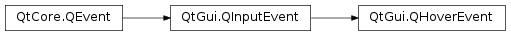

QHoverEvent¶
Detailed Description¶
The
PySide2.QtGui.QHoverEventclass contains parameters that describe a mouse event.Mouse events occur when a mouse cursor is moved into, out of, or within a widget, and if the widget has the
Qt.WA_Hoverattribute.The function
PySide2.QtGui.QHoverEvent.pos()gives the current cursor position, whilePySide2.QtGui.QHoverEvent.oldPos()gives the old mouse position.There are a few similarities between the events
QEvent.HoverEnterandQEvent.HoverLeave, and the eventsQEvent.EnterandQEvent.Leave. However, they are slightly different because we do an update() in the event handler ofHoverEnterandHoverLeave.
QEvent.HoverMoveis also slightly different fromQEvent.MouseMove. Let us consider a top-level window A containing a child B which in turn contains a child C (all with mouse tracking enabled):
Now, if you move the cursor from the top to the bottom in the middle of A, you will get the following
QEvent.MouseMoveevents:
- A::MouseMove
- B::MouseMove
- C::MouseMove
You will get the same events for
QEvent.HoverMove, except that the event always propagates to the top-level regardless whether the event is accepted or not. It will only stop propagating with theQt.WA_NoMousePropagationattribute.In this case the events will occur in the following way:
- A::HoverMove
- A::HoverMove, B::HoverMove
- A::HoverMove, B::HoverMove, C::HoverMove
-
class
PySide2.QtGui.QHoverEvent(type, pos, oldPos[, modifiers=Qt.NoModifier])¶ Parameters: - oldPos –
PySide2.QtCore.QPointF - type –
PySide2.QtCore.QEvent.Type - pos –
PySide2.QtCore.QPointF - modifiers –
PySide2.QtCore.Qt.KeyboardModifiers
Constructs a hover event object.
The
typeparameter must beQEvent.HoverEnter,QEvent.HoverLeave, orQEvent.HoverMove.The
posis the current mouse cursor’s position relative to the receiving widget, whileoldPosis its previous such position.modifiershold the state of all keyboard modifiers at the time of the event.- oldPos –
-
PySide2.QtGui.QHoverEvent.oldPos()¶ Return type: PySide2.QtCore.QPointReturns the previous position of the mouse cursor, relative to the widget that received the event. If there is no previous position, will return the same position as
PySide2.QtGui.QHoverEvent.pos().On
QEvent.HoverEnterevents, this position will always bePySide2.QtCore.QPoint(-1, -1).See also
-
PySide2.QtGui.QHoverEvent.oldPosF()¶ Return type: PySide2.QtCore.QPointFReturns the previous position of the mouse cursor, relative to the widget that received the event. If there is no previous position, will return the same position as
PySide2.QtGui.QHoverEvent.posF().On
QEvent.HoverEnterevents, this position will always bePySide2.QtCore.QPointF(-1, -1).See also
-
PySide2.QtGui.QHoverEvent.pos()¶ Return type: PySide2.QtCore.QPointReturns the position of the mouse cursor, relative to the widget that received the event.
On
QEvent.HoverLeaveevents, this position will always bePySide2.QtCore.QPoint(-1, -1).See also
-
PySide2.QtGui.QHoverEvent.posF()¶ Return type: PySide2.QtCore.QPointFReturns the position of the mouse cursor, relative to the widget that received the event.
On
QEvent.HoverLeaveevents, this position will always bePySide2.QtCore.QPointF(-1, -1).See also
© 2018 The Qt Company Ltd. Documentation contributions included herein are the copyrights of their respective owners. The documentation provided herein is licensed under the terms of the GNU Free Documentation License version 1.3 as published by the Free Software Foundation. Qt and respective logos are trademarks of The Qt Company Ltd. in Finland and/or other countries worldwide. All other trademarks are property of their respective owners.